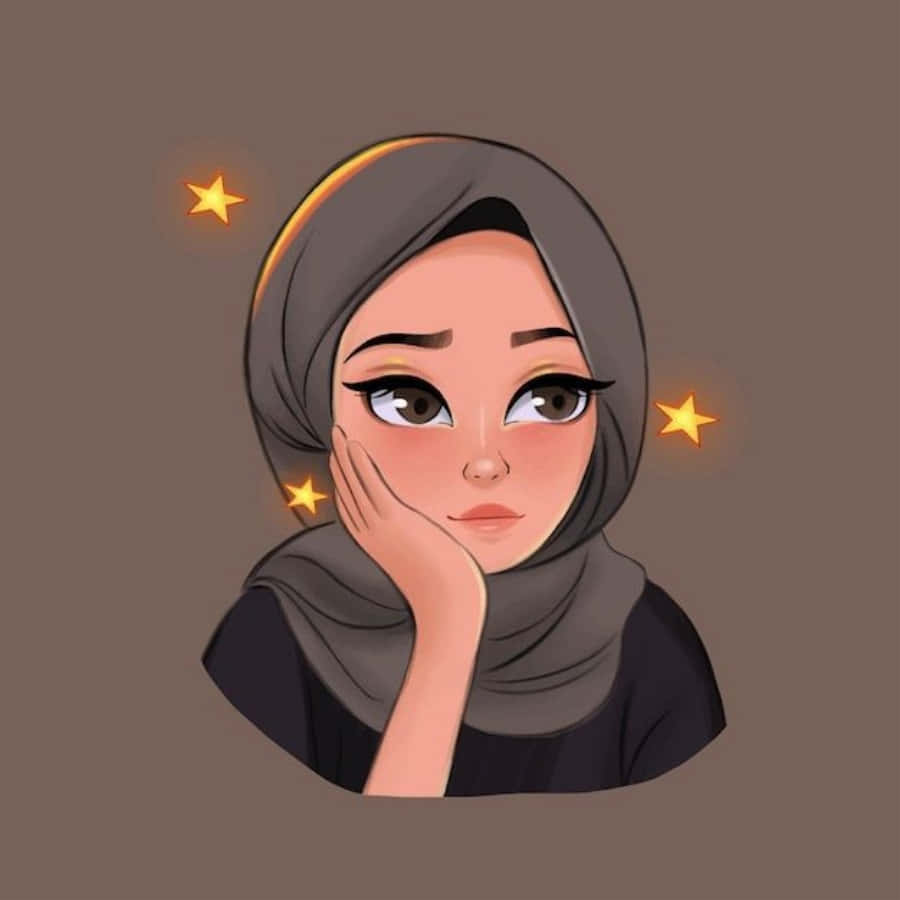

| Nur Amira Najwa  |
SummaryHighly-motivated Software Engineer with experience. Excellent attention-to-detail and teamwork skills. I am a goal oriented, determined and ambitious with a passion. |
|---|---|
Personal InformationAge: 22 Years Old Date of Birth:
19 January 2001 I/C NO: 010119-02-0404 |
Skill Highlights
|
ContactAddress Taman Air Biru, Pasir Gudang, Johor Phone 011-1334 2858 amiranajwa1901@gmail.com |
ExperienceWeb Developer- 09/2020 to 05/2022 Luna Web Design, Kuala Lumpur
|
Languages
|
EducationBachelor of Computer Science: Computer Information Systems -2019 UPM, Serdang, Selangor |
Hobbies
|
CertificationsProgramming Languages: JavaScript, HTMLS, PHP, OOP, CSS, SQL, MySQL |